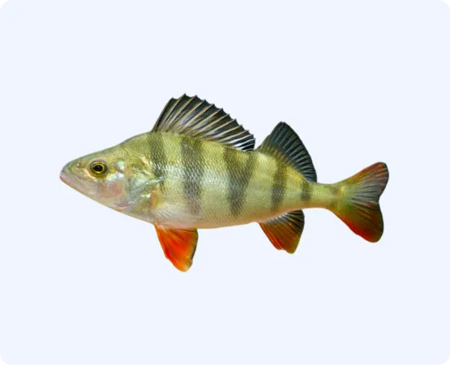

Живец
Живец окунь
Цена и наличие
- 6-10 см8 BYN / шт.В наличии
Данные на 23.11.2026.
Характеристики
- Размер
- 6-10 см
Описание
Живец окунь предназначен для рыболовов, желающих увеличить свои шансы на успешную ловлю и добиться наилучших результатов.
Окунь в роли живца используется реже, но может быть очень эффективным, особенно при ловле крупных хищников — таких как щука, налим или сом. Благодаря своей колючей спинке, он дольше остаётся живым на крючке и менее подвержен нападению мелкой рыбы. Отличается стойкостью, активностью и способностью выживать в сложных условиях. Преимущества: Высокая живучесть — хорошо переносит транспортировку и долго сохраняет активность в садках и ёмкостях. Защита от мелочи — колючие плавники делают его менее доступным для мелких хищников, что повышает шансы на поимку трофея. Прочная структура тела — устойчив к повреждениям при насаживании. Натуральная кормовая база — в некоторых водоёмах крупные хищники питаются именно молодью окуня. Подходит для ловли в сложных условиях — эффективен при низких температурах и слабом кислороде. Недостатки: Сложность насаживания — из-за острых колючек окунь требует аккуратного обращения при установке на крючок. Ограниченная подвижность — менее активен, чем, например, плотва, особенно в стоячей воде. Меньшая универсальность — не все хищники активно охотятся на окуня, особенно в водоёмах, где он не является естественной добычей. Опасен для других живцов — в общей ёмкости может травмировать более нежных рыб своими колючками. Живец окунь — специализированная наживка, подходящая для опытных рыболовов и охоты на крупного хищника. Его живучесть и естественная защита делают его надёжным вариантом в условиях, где другие живцы быстро гибнут. Однако требует аккуратности в использовании и понимания повадок хищной рыбы.
Советы по использованию
Живец окунь — не самый универсальный, но очень надёжный вариант для целенаправленной ловли крупного хищника. При правильном обращении он становится стойкой и результативной наживкой в условиях, когда другие живцы быстро теряют эффективность. Хранение и транспортировка: Окунь очень вынослив. Его можно держать в ведре или садке без аэрации дольше, чем других живцов. Однако при длительной рыбалке рекомендуется менять воду и избегать перегрева или переохлаждения. Аккуратность при насаживании: Окунь имеет острые колючие плавники, особенно на спине. Насаживать его нужно осторожно — лучше использовать толстые перчатки или специальные щипцы. Оптимальные способы — за губу или под спинной плавник, избегая повреждения внутренних органов. Использование для ловли трофейной рыбы: Мелкий окунь особенно эффективен при охоте на крупную щуку, сома и налима. Он хорошо удерживается на крючке и менее доступен для мелкой рыбы, что помогает отсечь «мелочь». Подбор снастей: Лучше всего окунь работает на жерлицах, донках и живцовых оснастках. Для ловли с поплавком стоит учитывать его умеренную подвижность — он не будет активно двигаться в толще воды, как плотва, но способен долго привлекать внимание за счёт устойчивого поведения. Условия ловли: Живец окунь эффективен в холодное время года, на глубине и в водоёмах с бедной кислородной средой, где другие живцы быстро погибают. В мутной воде он может быть менее заметен, но его “устойчивая” вибрация привлекает хищника. Не смешивайте с другими живцами: Из-за своих острых плавников окунь может поранить более нежных рыб (например, плотву или карася), поэтому храните его отдельно.